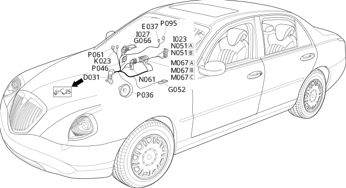

31 right front door
- Path
- Electrical equipment > Wiring > 31 right front door
- Kind
- wiring harness
- Applies to
- all engines; all production periods
- Interactive page
- https://sloeber94.github.io/elrnDB-lThss/en/#/207360
Applies to: all engines; all production periods

Topics that link to this page (17)
- D031 Right front door coupling(REAR)
- E037 Unit signalling passenger front door locking/unlocking(RIGHT FRONT DOOR)
- G052 Right front door light (courtesy)(RIGHT FRONT DOOR)
- G066 Right front door handle light(RIGHT FRONT DOOR)
- I023 Switch on passenger side exterior handle(RIGHT FRONT DOOR)
- I027 Passenger front door locking/unlocking switch(RIGHT FRONT DOOR)
- K023 Anti-crush safety sensor in passenger front door(RIGHT FRONT DOOR)
- M067A Passenger door control unit (NPP)(RIGHT FRONT DOOR)
- M067B Passenger door control unit (NPP)(RIGHT FRONT DOOR)
- M067C Passenger door control unit (NPP)(RIGHT FRONT DOOR)
- N051A Right front door lock geared motor(RIGHT FRONT DOOR)
- N051B Right front door lock geared motor(RIGHT FRONT DOOR)
- N061 Right front electric window motor(RIGHT FRONT DOOR)
- P036 Speaker in right front door(RIGHT FRONT DOOR)
- P046 Right front tweeter speaker(RIGHT FRONT DOOR)
- P061 Right external rear view mirror(RIGHT FRONT DOOR)
- P095 RF aerial on right front door for passive entry (NPE)(RIGHT FRONT DOOR)